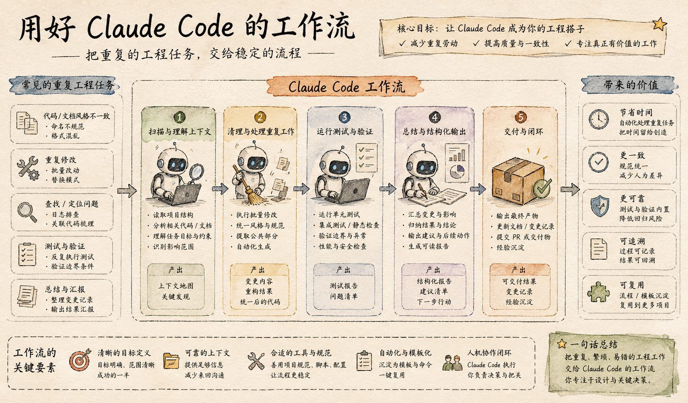

很多人刚开始用 Claude Code，最容易沉迷的是那种“它居然真能改代码”的新鲜感。
写个函数、改个 Bug、补个注释、顺手查个文件，确实已经很强。
但如果你真的每天都在用它，一段时间后会发现，真正最值钱的不是“它偶尔写出一段漂亮代码”，而是：
它开始接手那些你明明会做、但真的很烦、很碎、很重复的 80% 枯燥工作。
这篇文章，改写自 dev.to 上一篇关于 Claude Code 日常工作流的英文文，原标题是：
5 Claude Code Workflows I Use Every Day for the Boring 80%
我不准备照着原文逐段翻译，而是想把它整理成一篇更适合中文读者的公众号版本。
因为这篇文章最值得学的，不是“作者具体敲了哪几条命令”，而是他已经把 Claude Code 用到了一个很成熟的阶段：
不是偶尔叫 AI 来帮忙，而是让 AI 稳定接住那些重复、机械、容易打断注意力的日常链路。
很多人直觉上会觉得，像 Claude Code 这种能力这么强的东西，最应该拿去解决高难度问题。
这当然没错。
但在真实工作里，真正最消耗人的，往往不是最难的 20%，而是那 80%：
这些事不一定难，但它们会持续打断节奏。
你每次都得自己切回来、自己补上下文、自己扫尾。
所以 Claude Code 真正高回报的用法，并不是“请它天降神力替你解决超级难题”，而是：
把那些低判断密度、高重复度、会持续消耗心流的工作，系统性地交给它。
因为它们有 4 个共同特点：
这意味着它特别适合作为日常工作流，而不是一次性表演。

如果你今天还在把 Claude Code 主要用成：
那其实还停留在“即时问答”层。
而这篇文章更有价值的地方，在于它提醒你：
真正的生产力提升，不是问一次更聪明的问题，而是把一类问题变成稳定工作流。
我把原文的思路重新整理后，觉得最适合中文开发者理解的，是下面这 5 类：
下面逐个说。
这是我觉得最容易立刻见效的一类。
很多人让 Claude Code 改东西时，习惯是直接说：
问题是，Claude 虽然能直接动，但如果没有先扫清上下文，它就容易只看局部，不看整体。
而真正成熟一点的做法，是先让它做一轮“轻量项目侦察”：
也就是说，不是上来就写，而是先摸清地图。
不是“省下 5 分钟阅读代码”。
而是减少那种改到一半才发现理解错上下文、然后整段返工的成本。
这是第二个非常值钱的习惯。
真实开发里，很多任务其实包含两部分：
比如：
这些动作本身不难，但如果你自己手动做，很容易把精力耗散掉。
更好的做法是：
先让 Claude Code 把这些“施工前准备”做完，你再集中处理真正重要的逻辑。
这类工作流的核心不是“让 AI 替你完成一切”，而是把你的注意力从杂务里解放出来。
当这些清理动作先被接住以后，后面的关键改动会顺很多。
很多人用 Claude Code 最大的痛点不是“它不会写”，而是：
它写完以后，你还得自己重新验证一轮。
所以真正成熟的工作流，绝对不是“生成代码 -> 结束”。
而应该是：
生成 -> 跑测试 -> 读报错 -> 修补 -> 再验证
也就是说，让 Claude 不只是写，还要把反馈循环一并吃进去。
这件事的价值非常大。
因为一旦你把验证链接进去，Claude Code 就不再只是“输出内容”，而是在一个闭环里工作。
因为它能显著降低“第一版看起来没问题，其实一跑就炸”的情况。
而且它还能让你少做一件特别耗人的事：
自己反复复制报错，再粘回给 AI。
这是很多人一开始没意识到、但长期回报特别高的一类。
你会发现，很多日常任务虽然内容不同，但结构几乎一样。
比如：
这些工作不是完全没有思考，但其中很大一块其实是重复骨架。
如果每次都从零开始，你会不断把精力花在“复制那一套通用动作”上。
更高效的方式是把这类任务模板化，让 Claude Code 接手那部分重复结构。
这样你自己就可以把注意力放在真正有差异的那一小部分上。
最后一个工作流，是很多人最容易低估的：
收尾。
很多开发任务真正让人烦的，不是中间实现，而是最后那些“必须做但很碎”的事：
如果这些都要你自己手工收拢，一天下来其实会非常消耗。
而 Claude Code 很适合接住这一层，因为它刚刚参与过整个过程，知道改了哪些文件、碰了哪些逻辑、跑了哪些检查。
这一层虽然不像“写代码”那么显眼，但它对提升节奏非常有帮助。
如果把这篇文章的核心再压缩一层，我觉得它真正讲的不是 5 个技巧，而是一个使用观念的变化：
以前你可能会想：
现在你更应该想：
这个视角一变，Claude Code 的角色就变了。
它不再只是一个你临时问两句的编码助手。
它更像一个会持续接住杂务、准备环境、跑反馈、补收尾的数字搭档。
我觉得特别适合下面几类人：
反过来说，如果你现在还只是偶尔用一次 Claude Code，先不用急着搭太复杂的流程。
你完全可以先从最简单的两类开始：
光这两步，通常就能把体验抬高一个层级。
如果你今天只记住一句话，我希望是这句：
Claude Code 最该替你接手的，不是最炫的 20%，而是那 80% 你明明会做、但真的不值得亲自重复做的枯燥劳动。
真正成熟的使用方式，不是不断追求“更神的单次输出”，而是慢慢把这些重复链路交出去：
当你开始这样用 Claude Code，它才会从“一个会写代码的 AI”，逐渐变成“一个真的在帮你省时间的工作流伙伴”。
原始来源： 5 Claude Code Workflows I Use Every Day for the Boring 80%